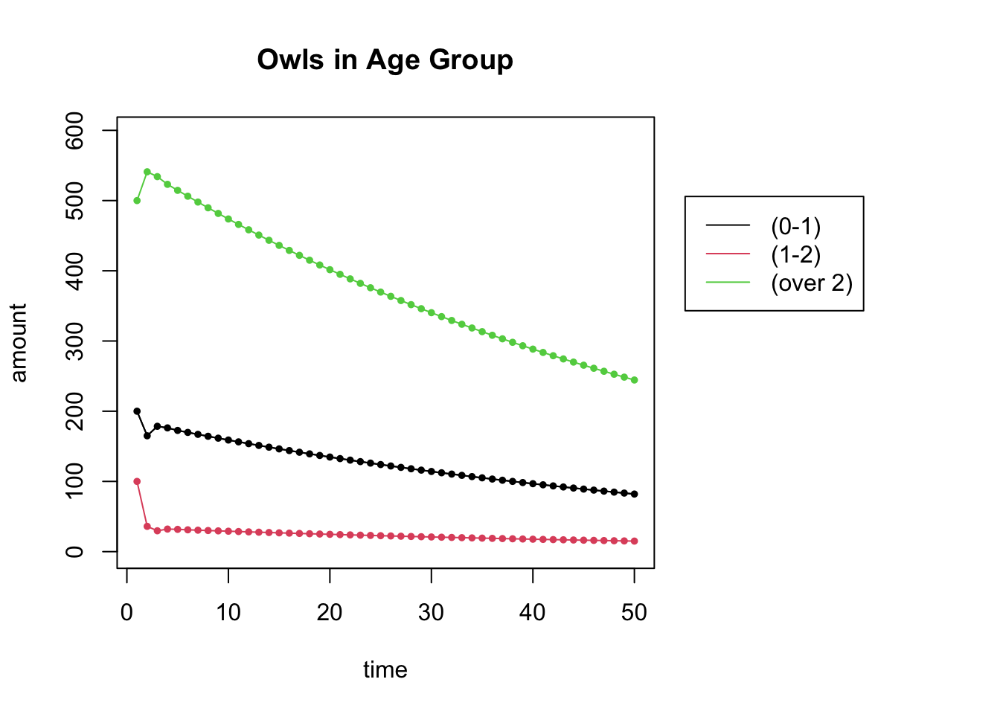
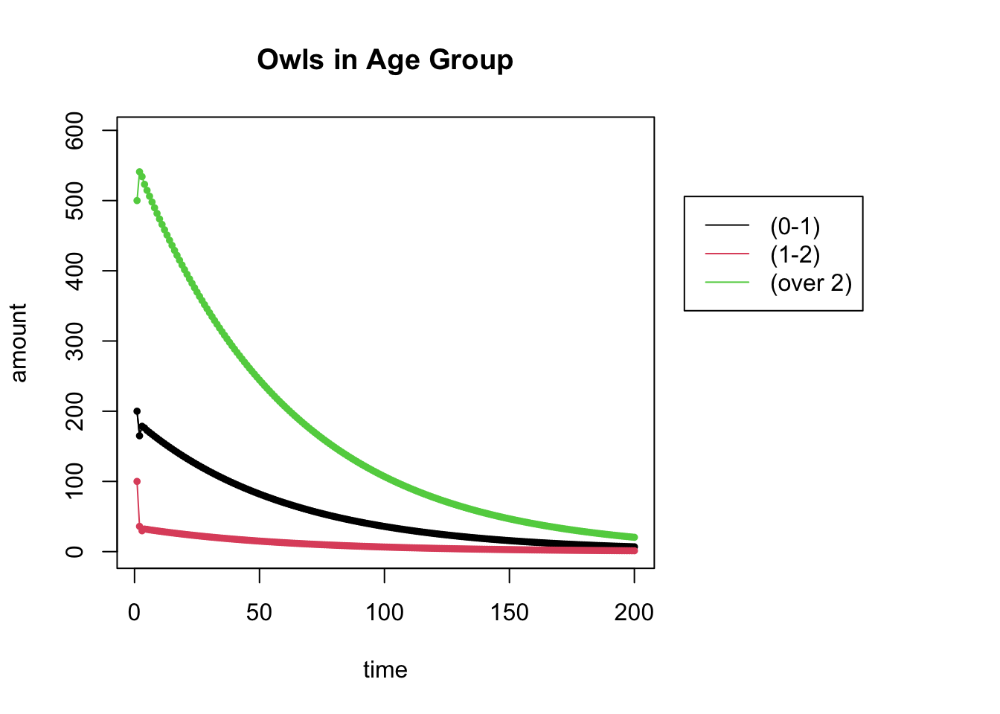
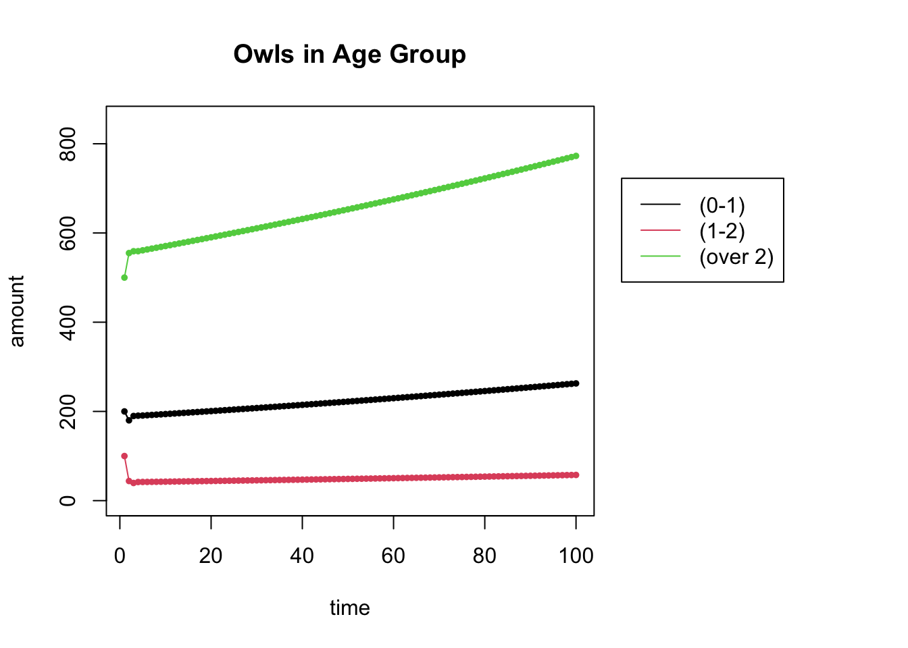
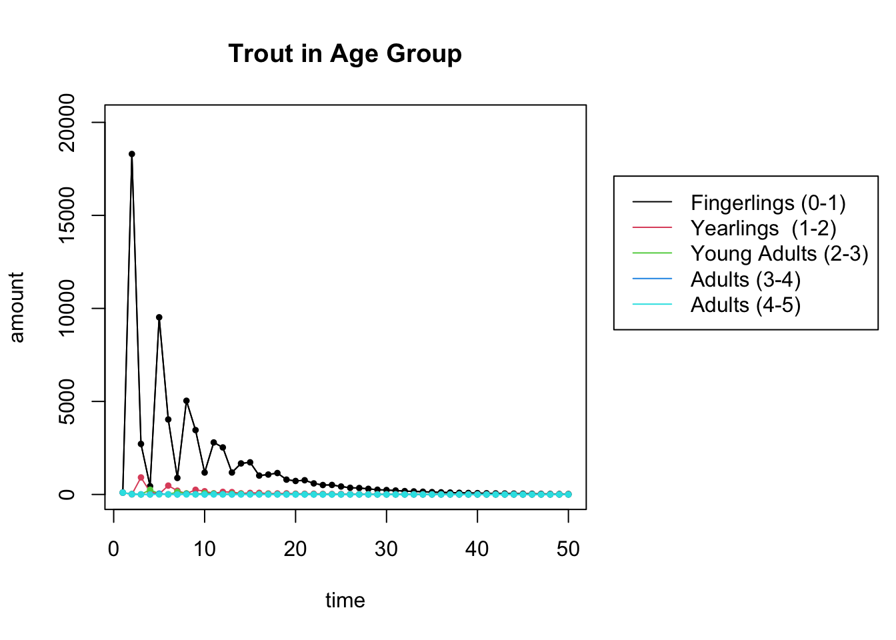

Vector 24 Modeling of Ecological Systems
In this exploration, we will explore the dynamics of a female animal population modeled by a Leslie matrix \(L\) which has the form \[L = \begin{bmatrix} F_1 & F_2 & F_3 & \cdots & F_{n-1} & F_n \\ S_1 & 0 & 0 & \cdots & 0 & 0 \\ 0& S_2 & 0 & \cdots & 0 & 0 \\ \vdots & \ddots & \ddots & \vdots & \vdots \\ 0& 0 & 0 & S_{n-2} & 0 & 0 \\ 0& 0 & 0 & 0 & S_{n-1} & S_n \\ \end{bmatrix} \]
The female population is grouped in \(n\) age classes.
- The survival rate \(S_i\) is probability that an animal in age class \(i\) survives and enters age class \(i+1\).
- The fecundity rate \(F_i\) is the reproduction rate of animals in age class \(i\).
Given an initial population \(\mathsf{x}_0 \in \mathbb{R}^n\), the population \(\mathsf{x}_{t+1}\) at time \(t+1\) is determined by \[ \mathsf{x}_{t+1} = A \mathsf{x}_t. \]
24.1 Helper Functions to Plot Dynamical Systems
I have written some code that generates a trajectory for a dynamical system and then plots it. You should run this code chunk before the others.
# run this command to load some practical math functions
require(pracma)
# Creates a trajectory for the dynamical system
# A = the matrix
# start = the initial vector
# N = number of iterations
get_trajectory <- function(A, start, N) {
### this code follows the populations for N steps
m = dim(A)[1] # m is the number of rows of L
X = matrix(0, nrow=m, ncol=N) # Store the results in a (m x N) matrix called X
X[,1] = start # put start in the first column of X
# loop N times and put your results in X
for (i in 2:N) {
X[,i] = A %*% X[,i-1]
}
return(X)
}
# Plots a trajectory along a time axis
# X = the trajectory
# title = the title for the plot
# types = a vector of the names for each of the entries of the vector.
plot_trajectory <- function(X, title, types) {
m = dim(X)[1]
N = dim(X)[2]
t = seq(1,N) # time
print(dim(X))
print(dim(t))
# Expand right side of clipping rect to make room for the legend
par(xpd=T, mar=par()$mar+c(0,0,0,10))
ymin = min(0, 1.1 * min(X))
ymax = max(0, 1.1 * max(X))
# Plot graph
plot(t, X[1,], type='l', col=1, ylim=c(ymin,ymax), ylab="amount", xlab="time", main=title)
for (i in 1:m) {
lines(t, X[i,], col=i)
points(t,X[i,], col=i, pch=20, cex=.8)
}
# Plot legend where you want
legend(N *1.1, ymax * .85, types, col=1:m, lty = 1)
# Restore default clipping rect
par(mar=c(5, 4, 4, 2) + 0.1)
}24.2 Northern Spotted Owl Population
We model the population dynamics of the Northern Spotted Owls using a Leslie Matrix. The age classes for the spotted owls are:
- juvenile (less than 1 year old)
- subadult (1 to 2 years old)
- adult (over 2 years old)
and the Leslie Matrix is: \[L=\begin{bmatrix} 0&0&0.33 \\ 0.18 & 0 & 0 \\ 0 & 0.71 & 0.94 \end{bmatrix}.\]
24.2.1 Population forecast
Suppose that we started out with 200 juveniles, 100 subadults and 500 adults. What happens to this population over time?
## [,1] [,2] [,3]
## [1,] 0.00 0.00 0.33
## [2,] 0.18 0.00 0.00
## [3,] 0.00 0.71 0.94start = c(200,100,500) # the starting distribution
N = 50 # N is the number of iterations
X = get_trajectory(L, start, N)
plot_trajectory(X, "Owls in Age Group", c("(0-1)", "(1-2)", "(over 2)"))## [1] 3 50
## NULL
24.2.2 The population at \(t=200\)
Change the code above to run for \(N=200\). Can you now make a stronger statement about the long-term population?
N = 200 # N is the number of iterations
X = get_trajectory(L, start, N)
plot_trajectory(X, "Owls in Age Group", c("(0-1)", "(1-2)", "(over 2)"))## [1] 3 200
## NULL
Yes, we can now see that populations are dying out.
24.2.3 Eigenvectors and eigenvalues of \(L\)
Use eigenvalues and eigenvectors to explain the asymptotic behavior of the system. You can use the function eigen(A) to compute the eigenvalues and eigenvectors of a matrix.
## eigen() decomposition
## $values
## [1] 0.9835927+0.0000000i -0.0217964+0.2059185i -0.0217964-0.2059185i
##
## $vectors
## [,1] [,2] [,3]
## [1,] 0.31754239+0i 0.6820937+0.0000000i 0.6820937+0.0000000i
## [2,] 0.05811107+0i -0.0624124-0.5896338i -0.0624124+0.5896338i
## [3,] 0.94646180+0i -0.0450520+0.4256233i -0.0450520-0.4256233iThe largest eigenvalue of less than one. This explains why the owls are dying: when the dominant eigenvalue is less than one, we tend to the zero vector as time increases.
24.3 Northern Spotted Owls Revisited
More recent spotted owl data give the following entries for the Leslie Matrix of the spotted owl population:
- Juvenile Survival 0.22
- Subadult Survival 0.85
- Adult Survival 0.94
- Subadult Fecundity 0.00
- Adult Fecundity 0.33
24.3.1 Find the long-range populations
Using this new Leslie matrix \(L\) and the same initial populations \(\mathsf{x}_0 = [200,100, 500]\) as above, create a plot of the owl populations for \(N=100\).
# Uncomment the next line and create this matrix
# L =
L = cbind(c(0,.22,0),c(.15,0,.85),c(.33,0,.94)) # the Leslie Matrix
L## [,1] [,2] [,3]
## [1,] 0.00 0.15 0.33
## [2,] 0.22 0.00 0.00
## [3,] 0.00 0.85 0.94start = c(200,100,500)
N = 100
X = get_trajectory(L, start, N)
plot_trajectory(X, "Owls in Age Group", c("(0-1)", "(1-2)", "(over 2)"))## [1] 3 100
## NULL
24.3.2 The populations at \(t=100\) versus the dominant eigenvector
The following code compares your \(t=100\) population ratios to the dominant eigenvector ratios. What do you notice? Why does this make sense?
finalpop = X[,N]
finalpop = finalpop/sum(finalpop)
vec = as.numeric(eigen(L)$vectors[,1])
vec = vec/sum(vec)
tabledata = cbind(finalpop,vec)
tableframe = data.frame(tabledata)
names(tableframe) = c('population', 'eigenvector')
rownames(tableframe) = c('juveniles','subadults','adults')
knitr::kable(
tableframe, booktabs = TRUE,
caption = 'Ratios of vector entries'
)| population | eigenvector | |
|---|---|---|
| juveniles | 0.2403776 | 0.2403776 |
| subadults | 0.0527053 | 0.0527053 |
| adults | 0.7069171 | 0.7069171 |
These ratios are the same. This is as expected, since in the limit, the vectors should coverge to the direction of the dominant eigenvalue.
24.3.3 The long-range prospects
What are the long-range prospects for the Northern Spotted Owl? Is it better or worse than the original data given above?
They are much better. The population is increasing because the dominant eigenvalue 1.003 is larger than 1.
## [1] 1.003373+0i24.4 Brook Trout in Hunt Creek, MI
Here is the Leslie Matrix of a population of brook trout in Hunt Creek in Michigan. The population is categorized into 5 age categories: fingerlings (0,1), yearlings (1-2), young adults (2-3), adults (3-4), and adults (4-5). Right now the population is seen to be dying off.
24.4.1 The Leslie Matrix
Explain, in words, the meaning of each of the non-zero entries of the matrix \(L\).
## [,1] [,2] [,3] [,4] [,5]
## [1,] 0.00 0.00 37.00 64.00 82
## [2,] 0.05 0.00 0.00 0.00 0
## [3,] 0.00 0.28 0.00 0.00 0
## [4,] 0.00 0.00 0.16 0.00 0
## [5,] 0.00 0.00 0.00 0.08 0The survival rates are:
- fingerlings to yearlings: 0.05
- yearlings to young adults: 0.28
- young adults to adults (3-4): 0.16
- adults (3-4) to adults (4-5): 0.08
- adults (4-5) to adults (4-5): 0
The nonzero fecundity rates are:
- young adults: 37
- adults (3-4): 64
- adults (4-5): 82
24.4.2 Find the long-range populations
Here are the population dynamics. Calculate the eigenvalues for \(L\) and match what you see to the plot of the populations for \(t=50\). What do you conclude about the long-range population?
## eigen() decomposition
## $values
## [1] 0.8871688+0.0000000i -0.3053909+0.7049316i -0.3053909-0.7049316i -0.1381935+0.0946928i
## [5] -0.1381935-0.0946928i
##
## $vectors
## [,1] [,2] [,3] [,4]
## [1,] 0.9982530311+0i 9.975971e-01+0.000000e+00i 9.975971e-01+0.000000e+00i 0.7864719+0.0000000i
## [2,] 0.0562606057+0i -2.580999e-02-5.957701e-02i -2.580999e-02+5.957701e-02i -0.1936371-0.1326839i
## [3,] 0.0177564522+0i -1.618518e-02+1.726352e-02i -1.618518e-02-1.726352e-02i 0.1416272+0.3658824i
## [4,] 0.0032023584+0i 4.639142e-03+1.663816e-03i 4.639142e-03-1.663816e-03i 0.0859429-0.3647277i
## [5,] 0.0002887711+0i -3.305712e-05-5.121576e-04i -3.305712e-05+5.121576e-04i -0.1323078+0.1204805i
## [,5]
## [1,] 0.7864719+0.0000000i
## [2,] -0.1936371+0.1326839i
## [3,] 0.1416272-0.3658824i
## [4,] 0.0859429+0.3647277i
## [5,] -0.1323078-0.1204805iThe largest eigenvalue 0.887 is less than 1. So the population is going to die out.
start = c(100,100,100,100,100) # the starting distribution
N = 50 # N is the number of iterations
X = get_trajectory(L, start, N)
plot_trajectory(X, "Trout in Age Group", c("Fingerlings (0-1)", "Yearlings (1-2)", "Young Adults (2-3)","Adults (3-4)","Adults (4-5)"))## [1] 5 50
## NULL
24.4.3 River Clean Up
A river clean up effort is being conducted with the hope of increasing the rate of survival from fingerlings to yearlings.
- To what level does that survival rate need to be increased to in order for the population to reach a steady state? Find your answer (accurate up to 3 decimal places) by trial and error. (You only need to change a single entry of \(L\). Which one?)
- What are the population percentages in the stable population?
# update the fingerling to yearling survival rate
L = cbind(c(0,.074,0,0,0),c(0,0,.28,0,0),c(37,0,0,.16,0),c(64,0,0,0,.08),c(82,0,0,0,0.00))
L## [,1] [,2] [,3] [,4] [,5]
## [1,] 0.000 0.00 37.00 64.00 82
## [2,] 0.074 0.00 0.00 0.00 0
## [3,] 0.000 0.28 0.00 0.00 0
## [4,] 0.000 0.00 0.16 0.00 0
## [5,] 0.000 0.00 0.00 0.08 0## do your eigenvalue/eigenvector analysis here
eigensys = eigen(L)
val = eigensys$values[1]
vec = eigensys$vectors[,1]
val## [1] 1.000172+0i## [1] 0.9105157386+0i 0.0673665682+0i 0.0188593926+0i 0.0030169835+0i 0.0002413171+0iChanging the fingerling survival rate to 0.074 results in a dominant eigenvector of 1 (approximately). The long-range population percentages will match the dominant eigenvector calculated above: \((0.9105, 0.0674, 0.0189, 0.0030, 0.0002)\).
This code shows the population dynamics. You shouldn’t need to edit this.
start = c(100,100,100,100,100) # the starting distribution
N = 50 # N is the number of iterations
X = get_trajectory(L, start, N)
plot_trajectory(X, "Trout in Age Group", c("Fingerlings (0-1)", "Yearlings (1-2)", "Young Adults (2-3)","Adults (3-4)","Adults (4-5)"))## [1] 5 50
## NULL